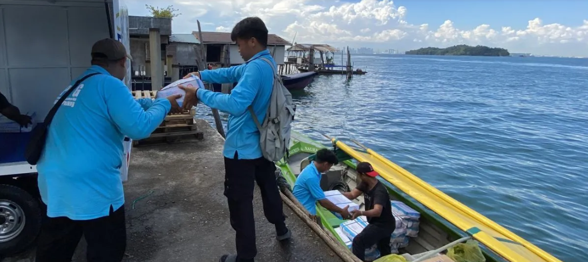

Perjuangan layanan MBG di Pulau Belakangpadang Batam
Di kawasan dapur berwarna biru Satuan Pelayanan Pemenuhan Gizi (SPPG) Belakangpadang, Batam, para pemasak di dapur sibuk melakukan pemorsian makanan di balik pintu. Dapur itu merupakan pelaksana dari program Makanan Bergizi Gratis atau MBG. Di luar dapur, sejumlah petugas berbaju biru tampak sibuk menata tumpukan ompreng ke dalam sarana transportasi yang siap mengantar makan siang dari program MBG bagi hampir 2.000 anak sekolah di pulau tersebut.
Program MBG di Pulau Belakangpadang menjadi yang pertama dijalankan di luar daratan wilayah Provinsi Kepulauan Riau. Kepala SPPG Belakangpadang Ahmad Jufri menjelaskan bahwa layanan MBG ini sangat dibutuhkan masyarakat di wilayah perbatasan. Sekolah-sekolah di pulau justru menyambut antusias program ini karena menjadi dukungan penting bagi nutrisi anak.
Sejak mulai beroperasi pada 24 September 2025, dapur SPPG Belakangpadang dari program MBG itu melayani 16 titik sekolah, dengan total 1.938 penerima manfaat. Aktivitas di dapur berlangsung hampir 24 jam.
Kembali Ke Halaman Utama »